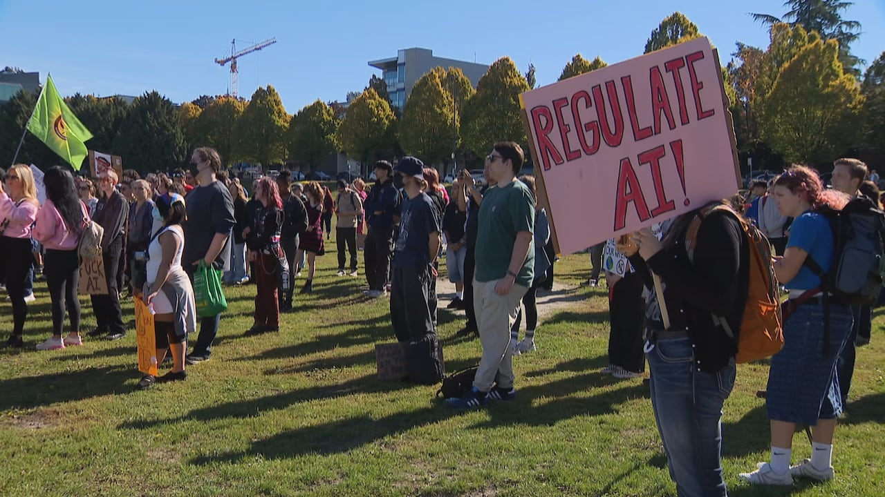

The scope boundary, the full work breakdown, the schedule through to September 2030, and
the four kill points at which this project can be redesigned, delayed or terminated.
01 — Scope
The boundary
What the $100M covers, and what it does not.
Project objective
To design, build, equip, and launch a research and innovation centre at UFV by September 1, 2030,
using the provided $100 million funding. The centre will provide shared research infrastructure
for students, faculty, researchers, and industry partners.
In scope
Inspiration for this part is taken from aiicenter.com[3]
Research and Technology Infrastructure
High-performance computing (HPC) and GPU infrastructure
AI and machine learning research facilities
Robotics and automation laboratories
Research data infrastructure
High-speed networking and cybersecurity infrastructure
Additional Faculty Research Labs
Agriculture technology
Environmental and climate research
Health technology
Computational biology
Business analytics
AR/VR and digital technology
Innovation and Prototyping
Makerspace
3D printing
Electronics prototyping
Robotics development areas
Collaboration spaces
Student Research
Student research projects
Research assistant opportunities
Access to computing resources
UFV already identifies applied research as an area that provides students with
opportunities to participate in research, experiential learning and relationships with
industry and community stakeholders.
Building and Operations
New research centre building
Research offices
Meeting rooms
Training/classroom spaces
Server/computing rooms
Sustainable energy and cooling systems
Accessibility infrastructure
Out of scope
Redevelopment of the entire UFV campus
Replacement of existing UFV facilities
Construction of unrelated academic buildings
Large scale residential facilities
Permanent funding of all future research projects
02 — Work Breakdown Structure
How the work breaks down
The project is devided into 8 distinct work packages at the third level.
We think these should be a schedule buffer for when there is uncertainty like unexpected delay.
For example: Construction delays, Permit delays, Equipment shipping, installation, Vendor issues,
Testing failures,… (realistically we think the project might need more time, we only give contruction
a little bit more than a year in the chart. However based on how long it took for the current UFV to
build a new dorm and the cafeteria, it might take at least 2 year for the building to be constructed.)
04 — Kill Points
Four places this project can be stopped
A kill point is a scheduled decision to continue, change or terminate. Each one sits
before a major commitment of funds, so that a project that is no longer viable is stopped
while the money is still in the bank.
Kill Point 1
Feasibility
Can UFV realistically build and operate the centre within the given time and $100M funding?
If YES then continue to requirements/design, otherwise terminate or redesign the project.
Kill Point 2
The project could be controversial in the eyes of the public
Before proceeding with the final design, UFV will conduct public consultations to understand
concerns from students, faculty, local residents, and community organizations regarding the
development of the centre. Some stakeholders may oppose the project due to concerns about
AI replacing jobs, data privacy, high energy consumption, and the environmental impact of
advanced computing facilities.
The project team will collect feedback through surveys, public meetings, and stakeholder
discussions to evaluate the level of community support. If significant opposition is identified,
the Project Manager will review possible solutions, such as implementing responsible AI policies,
improving energy efficiency, and providing greater transparency about the centre's research
activities. If these concerns cannot be addressed, the project may need to be redesigned,
delayed, or cancelled before major construction investments are made.

Hundred protests against AI data centres in cities across Vancouver on Oct. 3, 2026.
Source: CBC News.
Kill Point 3
Design and budget approval
Once the architectural and technical designs are completed. UFV will review the building
layout, research laboratory requirements, HPC infrastructure, construction plans,
and updated cost estimates. If the design doesn't meets the project's objectives,
exceed the approved budget or major issues are identified, the team may need to modify
the design, reduce the scope, or reconsider the project before proceeding.
Kill Point 4
Technology installation review
The project team will review the tech systems including networking infrastructure, robotics
equipment, and research laboratories to ensure they meet the technical requirements. If major
installation problems are found, the team will need to resolve them before proceeding with full
system testing and commissioning.